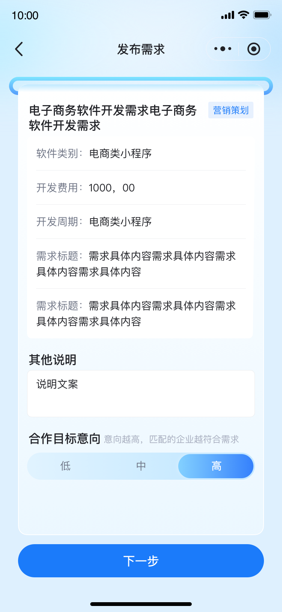
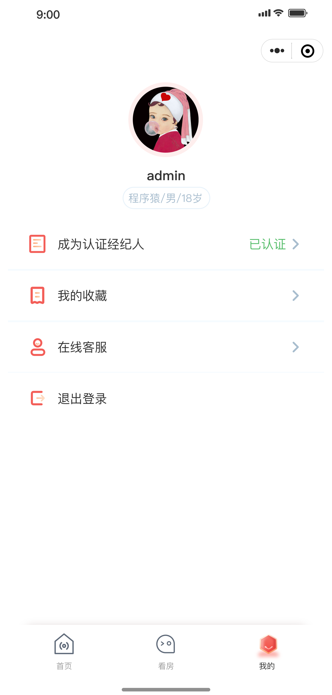
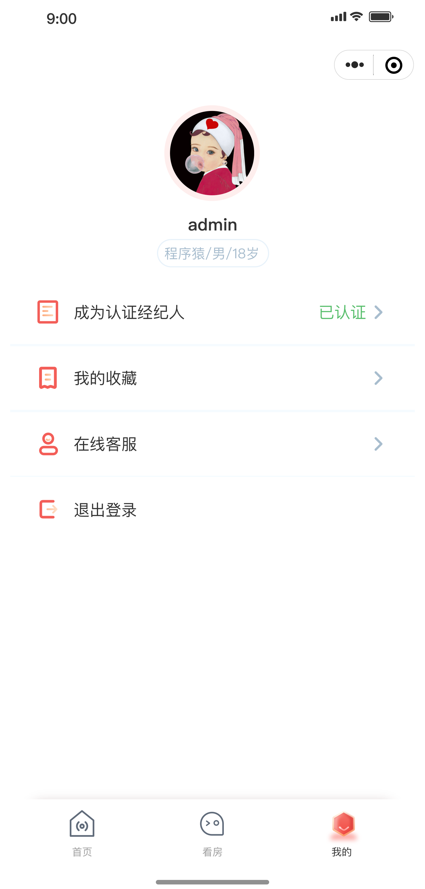
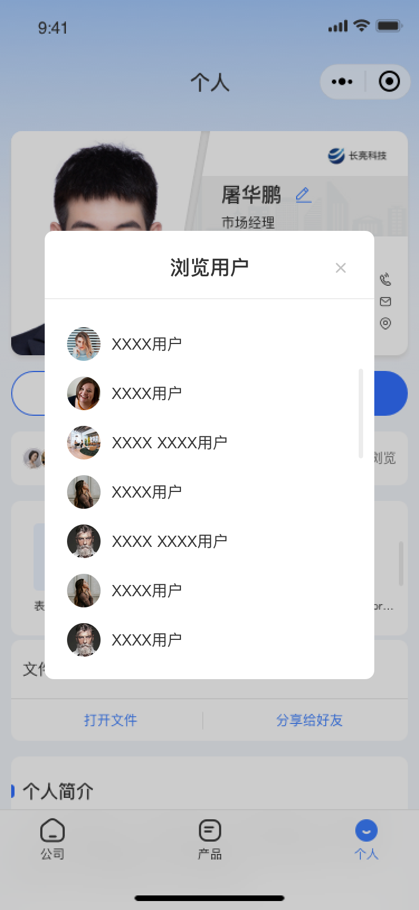
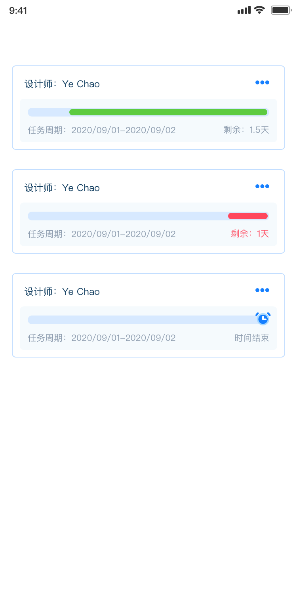
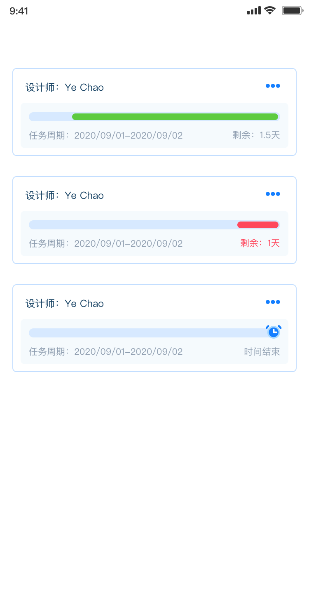

个人简介
本人对技术有浓厚兴趣，熟悉前端开发技术，熟练掌握HTML5、CSS3、JavaScript等前端技术，熟悉React、Vue等前端框架，熟悉Node.js、Express等后端技术，熟悉MySQL、MongoDB等数据库技术，熟悉Git、Webpack等前端工程化工具，熟悉微信小程序、App开发等移动端开发技术。熟悉 Golang、Python 等编程语言，熟悉 Linux、Docker 等运维技术。
13年互联网产品及项目开发管理经验，涉及游戏、电商、教育、工程软件等各领域，积累了丰富的产品需求调研、功能开发、交互设计、程序编码及项目的协调管理经验，具备主导完成0到1产品系统搭建的实战经验，熟悉新产品价值提炼过程和相关操作流程。
工作&项目经历
负责项目：福田区企业服务平台（平台名称：福i企）
项目介绍：该项目旨在打造一款福田区企业服务平台，为福田区企业提供一站式企业服务解决方案，支持企业在平台中寻找政策、找人才、找资金、找技术、找市场等服务。通过数字化的方式，提高企业服务的管理效率，满足政府、企业、市场等多方需求。
平台组成：PC端管理后台、微信小程序
工作内容：
- 产品管理：负责公司产品架构设计与研究，制定相关流程与产品规范体系，持续提高产品的易用性和体验感；
- 调研开发：负责对新产品的市场调研，需求分析、产品定义、系统规划及功能开发等，落实产品文档的编写和输出；
- 产品追踪：追踪产品的整体生命周期，关注用户体验与反馈，及时发现并解决问题，并予以跟进和沟通；
- 方案跟进：参与产品设计各阶段的评审，跟进外包团队的开发进度，为产品提供更合理的解决方案；
- 项目协同：协调公司内部相关资源，统筹跨部门的沟通协作，积极对接市场和运营部门，进行产品演示和需求收集工作，实现对产品的良好支持，确保各项目顺利实施。
工作成果：推动项目顺利实施，完成了福田区企业服务平台的上线运行。
截图：
负责项目：中小学课后服务数字化管理平台（平台名称：华为在校生）
项目介绍： 该项目旨在打造一款中小学课后服务数字化管理平台，为中小学提供一站式课后服务解决方案，包括课后服务管理、课后服务资源管理、课后服务资源共享、课后服务资源评价等功能。通过数字化的方式，提高课后服务的管理效率，满足教育局、学校、家长、学生、校外教培机构的课后服务需求。
平台组成：PC端管理后台、安卓和iOS端App、微信小程序
工作内容：
- 产品管理：负责公司产品架构设计与研究，制定相关流程与产品规范体系，持续提高产品的易用性和体验感；
- 调研开发：负责对新产品的市场调研，需求分析、产品定义、系统规划及功能开发等，落实产品文档的编写和输出；
- 产品追踪：追踪产品的整体生命周期，关注用户体验与反馈，及时发现并解决问题，并予以跟进和沟通；
- 方案跟进：参与产品设计各阶段的评审，深度剖析用户需求和操作体验，为产品提供更合理的解决方案；
- 项目协同：协调公司内部相关资源，统筹跨部门的沟通协作，积极对接市场和运营部门，进行产品演示和需求收集工作，实现对产品的良好支持，确保各项目顺利实施。
- 部门管理：负责产品部门日常管理、工作的协调安排、各节点工作计划的制订和监督落实，以及人员工作的指导考核，确保达成部门业绩目标。
工作成果：推动项目落地，在宝安区92所公民办中小学上线运行，在内蒙古194所公民办中小学上线运行。
系统截图：
职位：前端开发、项目管理
2014.08 - 2019.10（5年2个月）
负责项目：视频电商平台（平台名称：开卖吧）
项目介绍：该项目旨在打造“即看即买即分享”的视频电商购物平台，提供可由任何人随时随地进行分享的视频电商播放器，用户可在播放器内实现从浏览商品到支付订单的全流程操作。
平台组成：PC端管理后台、安卓和iOS端App、微信小程序
工作内容：
- 项目统筹：负责公司项目管理，主导项目的需求调研、分析定位、方案设计及产品技术评估等各环节工作，确保项目交付运行；
- 产品开发：主导项目产品开发，并独立完成项目前端视频播放器的开发，确保实现项目功能需求；
- 测试提升：参与项目测试，遵循系统架构分析与设计要求，减少软件缺陷率，增加安全指数和交付质量，不断提高资源使用效率；
- 分析改进：主导项目场景挖掘，资金落实及交付管理，分析交付执行数据，改进实施流程，促进项目高效执行；
- 团队赋能：负责项目团队搭建、人员招募及管理，定期组织项目复盘总结，分享业务及成功案例经验，持续为团队赋能，提升团队整体业务能力和管理水平。
工作成果：推动项目顺利实施，完成自主播放器研发，并实现在传统网站、社交平台中快速嵌入播放器，使传统网站和社交平台能低成本接入电商功能模块，在视频播放器内实现电商运营主流程。
参与项目：“范特西足球经理、范特西篮球经理”游戏项目
项目介绍：体育经理类网页游戏。游戏支持多人在线对战，游戏中的球员数据和现实中保持同步，增强游戏的代入感。玩家在游戏中担任职业经理人角色来管理一支球队，模拟现实场景，与其他玩家进行比赛。
平台组成：网页端
工作内容：
- 负责前端开发工作，对接服务端接口。
- 主导游戏界面开发与功能实现，确保实现游戏内的交互方案。
- 负责游戏内动画及特效的展现。
- 与相关部门的工作沟通对接。
工作成果：完成了游戏前端功能开发及迭代更新，保障了游戏的正常运行。游戏的用户量和用户充值金额均有较大幅度的提升。
个人项目
外包项目或个人独立完成的项目
租房平台小程序：理想窝
项目介绍：该项目是一款租房平台小程序，提供租房信息发布、租房信息搜索、租房信息推荐等功能。用户可以在小程序内发布自己的租房信息，也可以在小程序内搜索到自己满意的租房信息。
项目类型： 微信小程序
功能： 租房信息发布 租房信息搜索 租房信息推荐
截图：
 

企业宣传管理平台：MyBCB
项目介绍：该项目是一款企业宣传管理平台，提供企业宣传信息发布、企业宣传信息搜索、企业宣传信息推荐等功能。用户可以在平台内发布自己的企业宣传信息，也可以在平台内搜索到自己满意的企业宣传信息。
项目类型： PC 管理后台+微信小程序
功能： 企业宣传信息发布 企业宣传信息搜索 企业宣传信息推荐
截图：
室内装修施工进度管理应用软件：快拼
项目介绍： 该项目是一款室内装修施工进度管理应用软件，提供室内装修施工进度管理、室内装修施工进度查询、室内装修施工进度推荐等功能。用户可以在软件内发布自己的室内装修施工进度信息，也可以在软件内搜索到自己满意的室内装修施工进度信息。
项目类型： 微信小程序
功能： 室内装修施工进度管理 室内装修施工进度查询
截图：
 

三维实景地图版校务管理大屏
项目介绍：该项目是一款三维实景地图版校务管理大屏，提供校园地图、校园资源管理、校园资源共享、校园资源评价等功能。用户可以在大屏内查看校园地图，也可以在大屏内查看校园资源信息。
项目类型： PC Web端
功能： 校园地图大屏
截图：